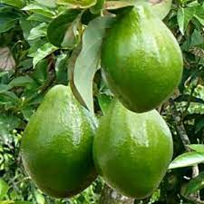
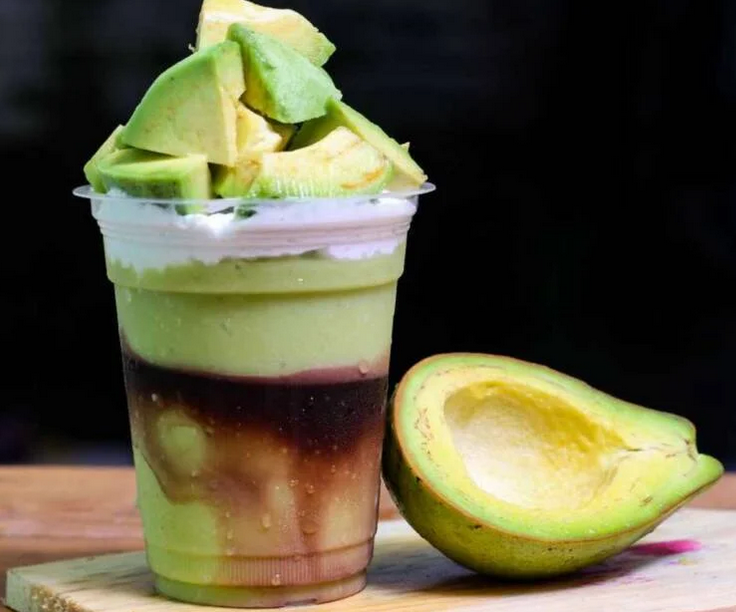
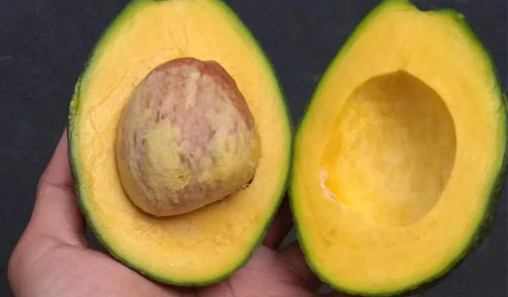
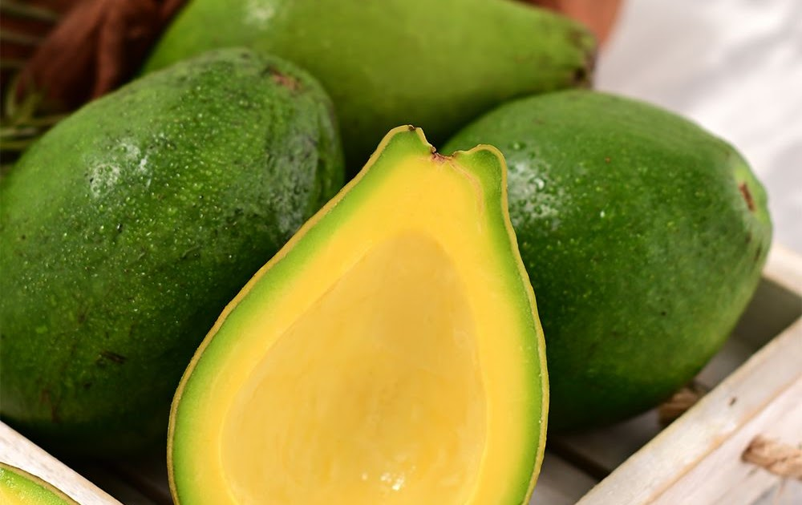
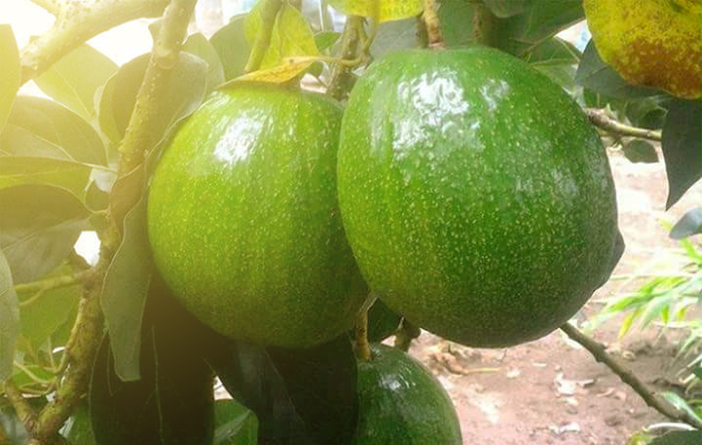
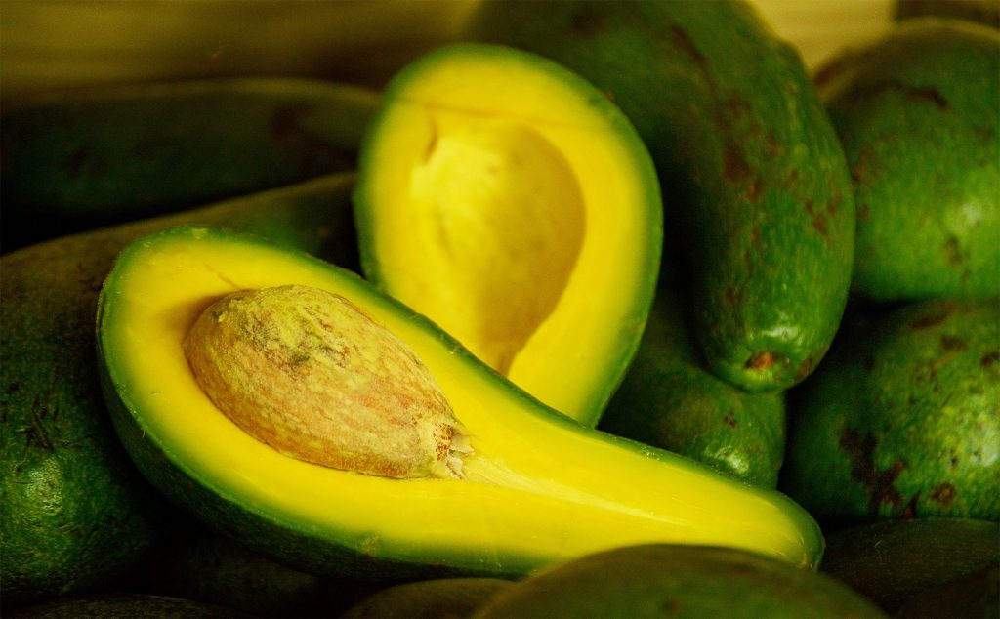

Alpukat merupakan jenis buah yang memiliki kandungan lemak tinggi, sekitar 20 kali lebih tinggi dibanding buah-buahan lain. Nama latin tanaman alpukat adalah Persea americana, diyakini berasal dari Amerika Tengah. Buah ini dikenalkan ke Indonesia oleh Hindia Belanda sekitar tahun 1920–1930. Belanda saat itu membawa alpukat ke Indonesia untuk memenuhi kebutuhan lemak masyarakat yang tinggal di pegunungan.
Di Indonesia, tanaman alpukat masih merupakan tanaman pekarangan, belum dibudidayakan dalam skala besar. Daerah penghasil alpukat adalah Jawa Barat, Jawa Timur, sebagian Sumatera, Sulawesi Selatan, dan Nusa Tenggara.
Pohon alpukat dapat tumbuh hingga 20 meter dengan daun sepanjang 12–25 cm. Bunganya kecil berwarna hijau kekuningan dengan ukuran 5–10 mm. Buahnya bervariasi dari 7–20 cm dengan berat 100–1000 gram, berbiji besar, dan bertekstur lembut.

Jus alpukat termasuk salah satu minuman yang banyak digemari. Buah hijau satu ini memang dikenal lezat dan sehat. Menurut medicalnewstoday.com, alpukat mengandung berbagai vitamin, asam folat, magnesium, hingga potassium. Cocok juga untuk diet karena tidak menyebabkan kegemukan.
Dalam satu sajian buah alpukat (sekitar 50 gram) mengandung 80 kalori, 8 gram lemak, 4 gram karbohidrat, dan 1 gram protein. Selain itu terdapat berbagai vitamin seperti E, K, B5, dan B6.




| No | Jenis Alpukat | Harga 1 Kg | Harga 2 Kg | Harga 3 Kg |
|---|---|---|---|---|
| 1 | Alpukat Mentega | Rp. 35.000,- | Rp. 65.000,- | Rp. 90.000,- |
| 2 | Alpukat Miki | Rp. 50.000,- | Rp. 90.000,- | Rp. 135.000,- |
| 3 | Alpukat Aligator | Rp. 30.000,- | Rp. 55.000,- | Rp. 80.000,- |
| 4 | Alpukat Kendil | Rp. 40.000,- | Rp. 70.000,- | Rp. 100.000,- |